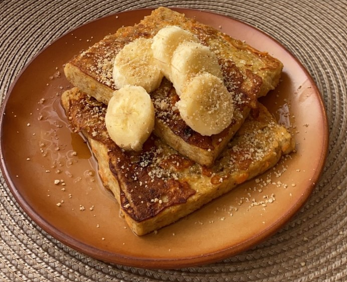

"Man shall not live on bread alone, but on every word that comes from the mouth of God." - Matthew 4:4
Sweet Potato French Toast

Autumn has finally come! And it's time for some sweet potato dessert. This simple, sweet and satisfying dish will surely warm up your autumn days. Best served with Japanese roasted tea (also known as hojicha).
Ingredients
1/4 cup sweet potato puree can be replaced with pumpkin puree
2 eggs
1 small ripe banana, mashed can be skipped, but gives a nice sweetness especially for kids
1 pinch cinnamon
1 pinch nutmeg
6 tbsp butter
6 thick slices of whole wheat sandwich bread
Instructions
Mix all ingredients except bread in a wide shallow dish.
Place bread slices in & let them soak up for a minute on each side.
Heat up a pan, add a tablespoon of butter and toast the soaked bread slices until golden, then flip & toast on the other side.
Top with bananas or other fruits, crushed nuts, and maple syrup or honey